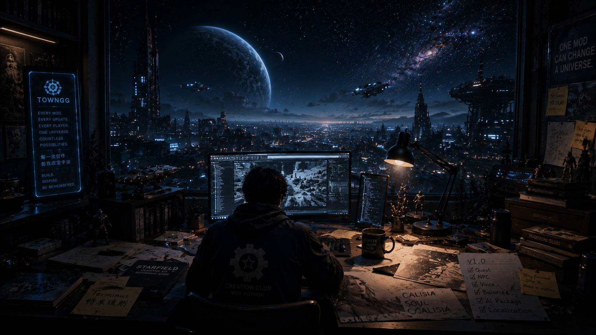

--
Visits

I am the creator of the Cassilia Universe Project (CUP), an original Starfield mod series centered around Cassilia, Terminus and the stories that connect them. CUP is built to expand Starfield with lore-friendly characters, weapons, outfits and future story-driven adventures that feel like a natural extension of Bethesda's universe.
TownGG focuses on believable sci-fi experiences that feel naturally integrated into the Starfield universe. The work combines gameplay integration, visual design, PBR material workflows, environmental immersion and interactive UI production.
Follow projects, Starfield creations and future CUP updates.
From gameplay concepts to in-game implementation, combining gameplay system design, UI iteration and Bethesda Creation Kit integration.
Privacy-safe public traffic data for the TownGG portfolio.
No individual visitor data, IP addresses, logs or security events are displayed.